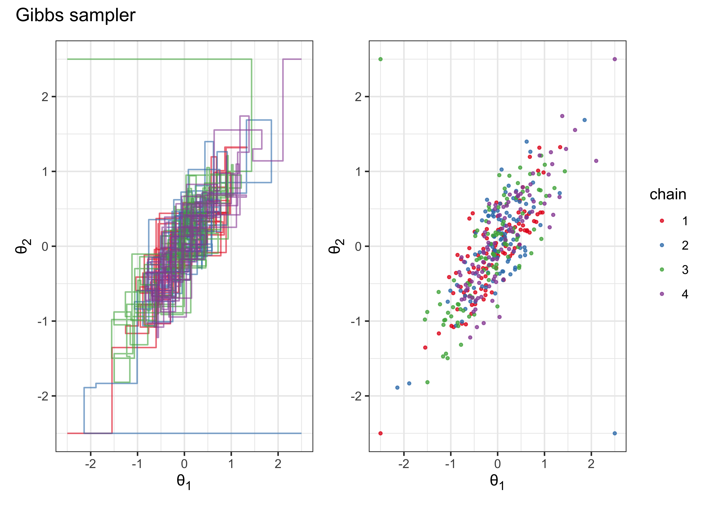
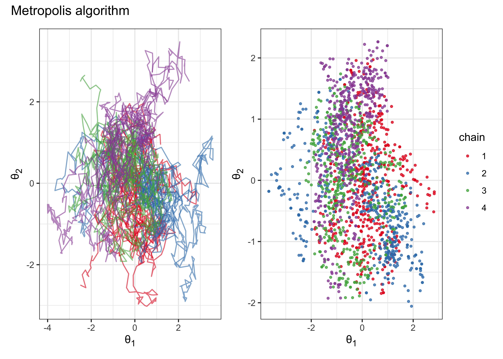
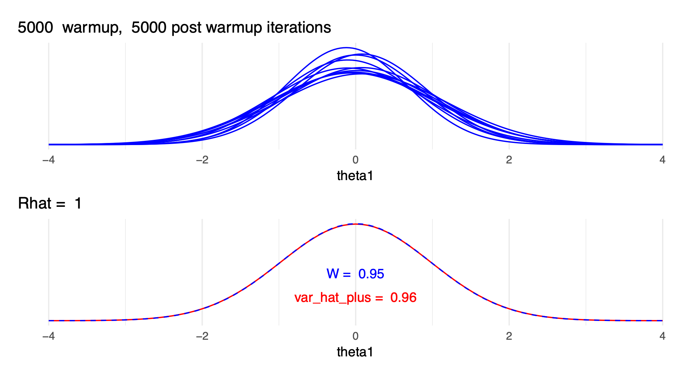
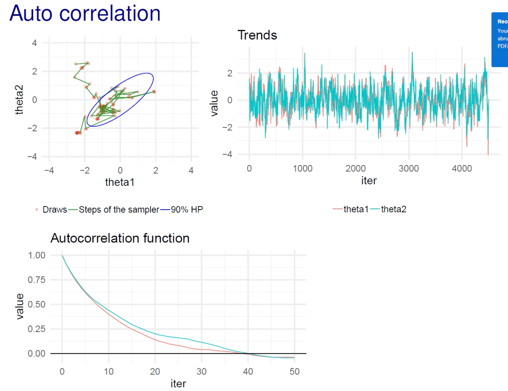

5 Section 5. Markov chain Monte Carlo
2021-09-26
knitr::opts_chunk$set(echo = TRUE, dpi = 300, comment = "#>")
library(glue)
library(ggtext)
library(patchwork)
library(tidyverse)
theme_set(theme_bw())5.1 Resources
5.2 Notes
5.2.1 Reading instructions
- Outline of the chapter 11
- Markov chain simulation: before section 11.1, pages 275-276
- 11.1 Gibbs sampler (an example of simple MCMC method)
- 11.2 Metropolis and Metropolis-Hastings (an example of simple MCMC method)
- 11.3 Using Gibbs and Metropolis as building blocks (can be skipped)
- 11.4 Inference and assessing convergence (important)
- 11.5 Effective number of simulation draws (important)
- 11.6 Example: hierarchical normal model (skip this)
- Animations
- Nice animations with discussion: (Markov Chains: Why Walk When You Can Flow?)[http://elevanth.org/blog/2017/11/28/build-a-better-markov-chain/]
- And just the animations with more options to experiment: (The Markov-chain Monte Carlo Interactive Gallery)[https://chi-feng.github.io/mcmc-demo/]
- Convergence
- theoretical convergence in an infinite time is different than practical convergence in a finite time
- no exact moment when chain has converged
- convergence diagnostics can help to find out if the chain is unlikely to be representative of the target distribution
- \(\widehat{R}\) effective sample size (ESS, previously \(n_\text{eff}\))
- there are many versions of \(\widehat{R}\) and effective sample size
- some software packages compute these using old inferior approaches
- updated version in Rank-normalization, folding, and localization: An improved $ for assessing convergence of MCMC
- there are many versions of \(\widehat{R}\) and effective sample size
5.2.2 Chapter 11. Basics of Markov chain simulation
Introduction
- MCMC: general method based on drawing values of \(\theta\) from approximate distributions and then correcting those draws to better approximate the target posterior distribution \(p(\theta, y)\)
- Markov chain: a sequence of random variables \(\theta^1, \theta^2, \dots\) for which, for any \(t\), the distribution of \(\theta^t\) given all previous \(\theta\)’s depends only on the previous value \(\theta^{t-1}\)
- general process:
- create several independent sequences
- each sequence \(\theta^1, \theta^2, \dots\) starts from some point \(\theta^0\)
- for each \(t\), draws \(\theta^t\) from the *transition distribution \(T_t (\theta^t | \theta^{t-1})\)
- essential to check convergence of chains
- this chapter introduces the Gibbs sampler and Metropolis-Hastings algorithm
11.1 Gibbs sampler
- algorithm:
- separate the parameter vector \(\theta\) into \(d\) components (also called subvectors) \(\theta = (\theta_1, \dots, \theta_d)\)
- for each iteration \(t\), each component is cycled through (thus, there are \(d\) steps for each iteration)
- for each iteration \(t\), for each \(j\) component of \(\theta\), each \(\theta_j^t\) is sampled from the conditional distribution given all the other current values of \(\theta\): \(p(\theta_j | \theta_{-j}^{t-1})\)
- where \(\theta_{-j}^{t-1} = (\theta_1^t, \dots, \theta_{j-1}^t, \theta_{j+1}^{t-1}, \dots, \theta_d^{t-1})\)
- is just all of the current values of \(\theta\) where some have yet to be update in iteration \(t\)
- ex: bivariate normal distribution
- a bivariate normally distribution population with mean \(\theta = (\theta_1, \theta_2)\) (so \(d = 2\) for this example) and covariance matrix \(\begin{pmatrix} 1 & \rho \\ \rho & 1 \\ \end{pmatrix}\)
- given single observation \((y_1, y_2)\)
- uniform prior on \(\theta\)
- posterior distribution defined in (5.1)
- need conditional posterior distribution for each \(\theta_j\) on the other components of \(\theta\)
- here, use equations A.1 from appendix A (pg. 582): (5.2)
- Gibbs sampler just alternatively samples from these two conditional distributions
\[\begin{equation} \begin{pmatrix} \theta_1 \\ \theta_2 \end{pmatrix} | y \sim \text{N} \begin{pmatrix} \begin{pmatrix} y_1 \\ y_2 \end{pmatrix}, \begin{pmatrix} 1 & \rho \\ \rho & 1 \\ \end{pmatrix} \end{pmatrix} \tag{5.1} \end{equation}\]
\[\begin{align} \begin{split} \theta_1 | \theta_2, y &\sim \text{N}(y_1 + \rho (\theta_2 - y_2), 1 - \rho^2) \\ \theta_2 | \theta_1, y &\sim \text{N}(y_2 + \rho (\theta_1 - y_1), 1 - \rho^2) \end{split} \tag{5.2} \end{align}\]
- below is the code for the example described above
chain_to_df <- function(chain, names) {
purrr::map_dfr(chain, ~ as.data.frame(t(.x))) %>%
tibble::as_tibble() %>%
purrr::set_names(names)
}
# Run a single chain of a Gibbs sampler for a bivariate normal distribution.
gibbs_sample_demo <- function(data, rho, theta_t0, N = 100) {
theta_1 <- theta_t0[[1]]
theta_2 <- theta_t0[[2]]
y1 <- data[[1]]
y2 <- data[[2]]
chain <- as.list(rep(theta_t0, n = (2 * N) + 1))
chain[[1]] <- c(theta_1, theta_2, 1)
for (t in seq(2, N)) {
theta_1 <- rnorm(1, y1 + rho * (theta_2 - y2), 1 - rho^2)
chain[[2 * (t - 1)]] <- c(theta_1, theta_2, t)
theta_2 <- rnorm(1, y2 + rho * (theta_1 - y1), 1 - rho^2)
chain[[2 * (t - 1) + 1]] <- c(theta_1, theta_2, t)
}
chain_df <- chain_to_df(chain, names = c("theta_1", "theta_2", "t"))
return(chain_df)
}
rho <- 0.8
y <- c(0, 0)
starting_points <- list(
c(-2.5, -2.5), c(2.5, -2.5), c(-2.5, 2.5), c(2.5, 2.5)
)
set.seed(0)
gibbs_demo_chains <- purrr::map_dfr(
seq(1, 4),
~ gibbs_sample_demo(y, rho, starting_points[[.x]]) %>%
add_column(chain = as.character(.x))
)
plot_chains <- function(chain_df, x = theta_1, y = theta_2, color = chain) {
chain_df %>%
ggplot(aes(x = {{ x }}, y = {{ y }}, color = {{ color }})) +
geom_path(alpha = 0.6, show.legend = FALSE) +
scale_color_brewer(type = "qual", palette = "Set1")
}
plot_points <- function(chain_df, x = theta_1, y = theta_2, color = chain) {
chain_df %>%
ggplot(aes(x = {{ x }}, y = {{ y }}, color = {{ color }})) +
geom_point(size = 0.75, alpha = 0.75) +
scale_color_brewer(type = "qual", palette = "Set1")
}
theta_axis_labs <- function(p) {
p +
theme(
axis.title.x = element_markdown(),
axis.title.y = element_markdown()
) +
labs(x = "θ<sub>1</sub>", y = "θ<sub>2</sub>")
}
gibbs_plot_chains <- plot_chains(gibbs_demo_chains) %>%
theta_axis_labs()
gibbs_plot_points <- gibbs_demo_chains %>%
group_by(chain, t) %>%
slice_tail(n = 1) %>%
ungroup() %>%
plot_points() %>%
theta_axis_labs()
(gibbs_plot_chains | gibbs_plot_points) + plot_annotation(title = "Gibbs sampler")
11.2 Metropolis and Metropolis-Hastings algorithms
- the Metropolis-Hastings algorithm is a generalized version of the Metropolis algorithm
The Metropolis algorithm
- is a random walk with an acceptance and rejection rule to converge to the target distribution
- steps:
- draws a starting point \(\theta^0\) from a starting distribution \(p_0(\theta)\) such that \(p(\theta^0|y) > 0\)
- for time \(t = 1, 2, \dots\):
- sample a proposal \(\theta^*\) from a jumping/proposal distribution \(J_t(\theta^*|\theta^{t-1})\)
- calculate the ratio of the densities: \(r = \frac{p(\theta^*|y)}{p(\theta^{t-1}|y)}\)
- set \(\theta^t = \theta^*\) with probability \(\min(r, 1)\), else \(\theta^t = \theta^{t-1}\) - if the proposal is more likely, it is always accepted, otherwise the ratio \(r\) is used as the probability of acceptance
- the jumping distribution \(J_t\) must be symmetric such that \(J_t(\theta_a|\theta_b) = J_t(\theta_b|\theta_a)\)
- the iteration still counts even if the proposal \(\theta^*\) is rejected
- ex: bivariate normal distribution (same as before):
- target density as bivariate normal: \(p(\theta|y) = \text{N}(\theta | 0, I)\)
- jumping distribution as a bivariate normal with smaller deviations and centered around the previous iteration’s \(\theta^{t-1}\): \(J_t(\theta^*|\theta^{t-1}) = \text{N}(\theta^* | \theta^{t-1}, 0.2^2I)\)
- thus, the density ratio: \(r = \text{N}(\theta^*|0, I) / \text{N}(\theta^{t-1}|0, I)\)
calc_metropolis_density_ratio <- function(t_star, t_m1, data, prior_cov_mat) {
numerator <- mvtnorm::dmvnorm(t_star, data, prior_cov_mat)
denominator <- mvtnorm::dmvnorm(t_m1, data, prior_cov_mat)
return(numerator / denominator)
}
metropolis_algorithm_demo <- function(data, theta_t0, N = 1000, quiet = FALSE) {
theta_t <- unlist(theta_t0)
prior_dist_mu <- data
prior_dist_cov_mat <- matrix(c(1, 0, 0, 1), nrow = 2)
jumping_dist_cov_mat <- prior_dist_cov_mat * 0.2^2
chain <- as.list(rep(NA_real_, n = N + 1))
chain[[1]] <- theta_t
n_accepts <- 0
for (t in seq(2, N + 1)) {
theta_star <- mvtnorm::rmvnorm(
n = 1, mean = theta_t, sigma = jumping_dist_cov_mat
)[1, ]
density_ratio <- calc_metropolis_density_ratio(
t_star = theta_star,
t_m1 = theta_t,
data = data,
prior_cov_mat = prior_dist_cov_mat
)
accept <- runif(1) < min(c(1, density_ratio))
if (accept) {
theta_t <- theta_star
n_accepts <- n_accepts + 1
}
chain[[t]] <- theta_t
}
if (!quiet) {
frac_accepts <- n_accepts / N
message(glue("fraction of accepted jumps: {frac_accepts}"))
}
return(chain_to_df(chain, names = c("theta_1", "theta_2")))
}
set.seed(0)
metropolis_chains <- purrr::map_dfr(
seq(1, 4),
~ metropolis_algorithm_demo(c(0, 0), starting_points[[.x]]) %>%
add_column(chain = as.character(.x))
)#> fraction of accepted jumps: 0.888#> fraction of accepted jumps: 0.868#> fraction of accepted jumps: 0.914#> fraction of accepted jumps: 0.869metropolis_plot_chains <- plot_chains(metropolis_chains) %>%
theta_axis_labs()
metropolis_plot_points <- metropolis_chains %>%
group_by(chain) %>%
slice_tail(n = 500) %>%
plot_points() %>%
theta_axis_labs()
(metropolis_plot_chains | metropolis_plot_points) + plot_annotation(title = "Metropolis algorithm")
The Metropolis-Hastings algorithm
- two changes to generalize the Metropolis algorithm:
- the jumping rule \(J_t\) need not be symmetric
- generally results in a faster random walk
- a new ratio \(r\) (5.3)
- can interpret at a re-weighting of the numerator and denominator by the probability of accepting or rejecting \(\theta^*\)
\[\begin{equation} r = \frac{p(\theta^* | y) / J_t(\theta^* | \theta^{t-1})}{p(\theta^{t-1} | y) / J_t(\theta^{t-1} | \theta^*)} \tag{5.3} \end{equation}\]
- properties of a good jumping rule:
- easy to sample \(J(\theta^*|\theta)\) for any \(\theta\)
- easy to compute the ratio \(r\)
- each jump travels a “reasonable” distance
- the jumpy are not rejected too frequently
11.2 Metropolis and Metropolis-Hastings algorithms
- for Bayesian analysis, we want to be able to use the posterior samples for inference, but requires special care when using iterative simulation
Difficulties of inference from iterative simulation
- two main challenges:
- “if the iterations have not proceeded long enough… the simulations may be grossly unrepresentative of the target distribution” (pg 282)
- correlation between draws: “simulation inference from correlated draws is generally less precise than from the same number of independent draws” (pg 282)
- to address these issues:
- design the simulations to enable monitoring of convergence
- compare variation between and within chains
Discarding early iterations of the simulation runs
- warm-up: remove first portion of draws to diminish the influence on the starting location
- how many to drop depends on the specific case, but dropping the first half of the chain is usually good
Dependence of the iterations in each sequence
- thinning a chain: keeping every \(k\)th simulation draw
- not necessary if the chains have converged
- can help with preserving RAM if many parameters
Multiple sequences with overdispersed starting points
- use multiple chains to be able to compare with each other
- mixing and stationarity discussed below
Monitoring scalar estimands
- check estimated parameter values and any other computed values of interest to see if their posterior distributions settle
Challenges of monitoring convergence: missing and stationarity
- mixing: when the chains converge to the same distribution
- stationarity: when each chains has converged to a consistent distribution of values
Splitting each saved sequence into two parts
- a method for checking convergence and stationarity of multiple chains:
- (after adjusting for warm-up) split each chain in half and check if all of the halves have mixed
- checks mixing: if all of the chains have mixed, the separate parts of the different chains should also have mixed
- checks stationarity: the first and second half of each sequence should be traversing the same distribution
Assessing mising using between- and within-sequence variances
- calculations for mixing of the split chains:
- \(m\): number of chains after splitting; \(n\): length of each split chain
- \(\psi\): each labeled estimand (parameter or calculated value of interest)
- label the simulations as \(\psi_{ij}\) where \((i=1, \dots, n; j=1, \dots, m)\)
- between-sequence variance \(B\) (5.4) and within-sequence variance \(W\) (5.5)
- estimate \(\text{var}(\psi|y)\) as a weighted average of \(B\) and \(W\) (5.6)
- is actually an overestimate
- use \(\widehat{\text{var}}^+(\psi|y)\) to calculate a factor by which the scale of the current distribution for \(\psi\) might be reduced if the simulations were continued \(\widehat{R}\)
- the calculation for \(\widehat{R}\) has been updated since publishing BDA3
- if \(\widehat{R}\) is above 1, indicates that letting the chains run longer would improve inference
- using these calculations of variance is more reliable than visually checking for mixing, convergence, and stationarity using trace-plots
- is also more practical when there are many parameters (such as is common for hierarchical distributions)
\[\begin{equation} B = \frac{n}{m-1} \sum_j^m (\bar{\psi}_{.j} - \bar{\psi}_{..})^2 \\ \quad \text{where} \quad \bar{\psi}_{.j} = \frac{1}{n} \sum _i^n \psi_{ij} \quad \text{and} \quad \bar{\psi}_{..} = \frac{1}{m} \sum_j^m \bar{\psi}_{.j} \tag{5.4} \end{equation}\]
\[\begin{equation} W = \frac{1}{m} \sum_j^m s_j^2 \quad \text{where} \quad s_j^2 = \frac{1}{n-1} \sum_i^n (\psi_ij - \bar{\psi}_{.j})^2 \tag{5.5} \end{equation}\]
\[\begin{equation} \widehat{\text{var}}^+(\psi|y) = \frac{n-1}{n}W + \frac{1}{n}B \tag{5.6} \end{equation}\]
11.5 Effective number of simulation draws
- compute an approximate “effective number of independent simulation draws” \(n_\text{eff}\)
- if all draws were truly independent, then \(B \approx \text{var}(\psi|y)\)
- but usually draws of \(\psi\) are autocorrelated and \(B\) will be larger than \(\text{var}(\psi|y)\)
- with non-normal posterior samples, may need to first transform the draws before calculating \(n_\text{eff}\) and \(\widehat{R}\)
- recommendation is to sample until \(\widehat{R} \le 1.1\) and \(n_\text{eff} \ge 5m\) where \(m\) is the number of split chains (i.e. \(\text{number of chains} \times 2\)) (pg. 287)
5.2.3 Lecture notes
5.1. Markov chain Monte Carlo, Gibbs sampling, Metropolis algorithm
- Gibbs sampler
- with conditionally conjugate priors, the sampling from the conditional distributions is easy for wide range of models
- software: BUGS, WinBUGS, OpenBUGS, JAGS
- benefit: no algorithm parameters to tune
- slow if parameters are highly dependent in the posterior
- the high correlation create a narrow region in which the sampler moves, slowing exploration of the posterior
- with conditionally conjugate priors, the sampling from the conditional distributions is easy for wide range of models
5.2. Warm-up, convergence diagnostics, R-hat, and effective sample size
- \(\widehat{R}\) with only a few draws and with many draws:

Rhat-with-few-draws
 - update \(\widehat{R}\) is rank normalized \(\widehat{R}\) - original \(\widehat{R}\) requires that the target distribution has finite mean and variance - rank normalized removes this requirement - improved detection of different scales between chains - the paper also proposes local convergence diagnostics and practical MCSE estimates for quantiles - autocorrelation in the chains (think of as a time series analysis) - describes the correlation given a certain lag - how many steps does it take for the chain to forget a previous step - can be used to compare efficiency of MCMC algorithms and parameterizations - in the example below, the autocorrelation plot shows that it takes about 40 steps to reach a correlation of 0 - the x-axis should be “lag”
 - calculating autocorrelation function - \(\hat{\rho}_{n,m}\) is the autocorrelation at lag \(n\) for chain \(m\) of \(M\) chains - can see the use of \(W\) and \(\widehat{\text{var}}^+\) from the calculation of \(\widehat{R}\) so that is accounts for how well the chains mix
\[ \hat{\rho}_n = 1 - \frac{W - \frac{1}{M} \sum_m^M \hat{\rho}_{n,m}}{2 \widehat{\text{var}}^+} \]
sessionInfo()#> R version 4.1.2 (2021-11-01)
#> Platform: x86_64-apple-darwin17.0 (64-bit)
#> Running under: macOS Big Sur 10.16
#>
#> Matrix products: default
#> BLAS: /Library/Frameworks/R.framework/Versions/4.1/Resources/lib/libRblas.0.dylib
#> LAPACK: /Library/Frameworks/R.framework/Versions/4.1/Resources/lib/libRlapack.dylib
#>
#> locale:
#> [1] en_US.UTF-8/en_US.UTF-8/en_US.UTF-8/C/en_US.UTF-8/en_US.UTF-8
#>
#> attached base packages:
#> [1] stats graphics grDevices datasets utils methods base
#>
#> other attached packages:
#> [1] forcats_0.5.1 stringr_1.4.0 dplyr_1.0.7 purrr_0.3.4
#> [5] readr_2.0.1 tidyr_1.1.3 tibble_3.1.3 ggplot2_3.3.5
#> [9] tidyverse_1.3.1 patchwork_1.1.1 ggtext_0.1.1 glue_1.4.2
#>
#> loaded via a namespace (and not attached):
#> [1] Rcpp_1.0.7 mvtnorm_1.1-2 lubridate_1.7.10 clisymbols_1.2.0
#> [5] assertthat_0.2.1 digest_0.6.27 utf8_1.2.2 R6_2.5.0
#> [9] cellranger_1.1.0 backports_1.2.1 reprex_2.0.1 evaluate_0.14
#> [13] highr_0.9 httr_1.4.2 pillar_1.6.2 rlang_0.4.11
#> [17] readxl_1.3.1 rstudioapi_0.13 jquerylib_0.1.4 rmarkdown_2.10
#> [21] labeling_0.4.2 munsell_0.5.0 gridtext_0.1.4 broom_0.7.9
#> [25] compiler_4.1.2 modelr_0.1.8 xfun_0.25 pkgconfig_2.0.3
#> [29] htmltools_0.5.1.1 tidyselect_1.1.1 bookdown_0.24 fansi_0.5.0
#> [33] crayon_1.4.1 tzdb_0.1.2 dbplyr_2.1.1 withr_2.4.2
#> [37] grid_4.1.2 jsonlite_1.7.2 gtable_0.3.0 lifecycle_1.0.0
#> [41] DBI_1.1.1 magrittr_2.0.1 scales_1.1.1 cli_3.0.1
#> [45] stringi_1.7.3 farver_2.1.0 renv_0.14.0 fs_1.5.0
#> [49] xml2_1.3.2 bslib_0.2.5.1 ellipsis_0.3.2 generics_0.1.0
#> [53] vctrs_0.3.8 RColorBrewer_1.1-2 tools_4.1.2 markdown_1.1
#> [57] hms_1.1.0 yaml_2.2.1 colorspace_2.0-2 rvest_1.0.1
#> [61] knitr_1.33 haven_2.4.3 sass_0.4.0